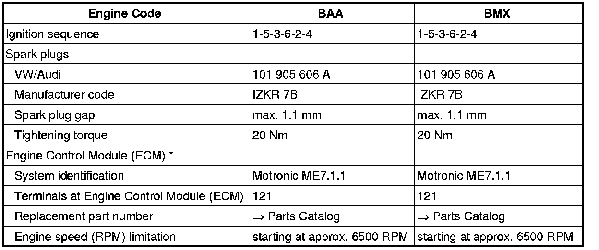

Ignition System: Testing and Inspection
Ignition System
--> [ Engine Speed Sensor, Checking ] Engine Speed Sensor, Checking
--> [ Ignition Coils with Power Output Stages, Checking ] Ignition Coils With Power Output Stages, Checking
--> [ Camshaft Position Sensor, Checking ] Camshaft Position Sensor, Checking
--> [ Knock Sensors, Checking ] Knock Sensors, Checking
--> [ Camshaft Adjusting Valves, Checking ] Camshaft Adjusting Valves, Checking
Observe Safety Precautions: and --> [ Safety Precautions ] Safety Precautions
View Test Data, Spark Plugs: --> [ Clean Working Conditions ] Clean Working Conditions
• For the electric components to work properly, a voltage of at least 11.5 V is required.
• The battery must only be disconnected and connected with the ignition switched off, since the Engine Control Module (ECM) can otherwise be damaged.
• Engine Control Module (ECM) is equipped with On Board Diagnostic (OBD).
• Components marked with * are tested via On Board Diagnostic (OBD) , Diagnostic mode 3: Check DTC memory.
• It is possible that the control module will recognize a malfunction and store a DTC during some tests. Therefore the following work steps must be performed in the mentioned sequence after ending all tests and repairs.
- Check DTC memory , Diagnostic mode 3: Check DTC Memory,
- Erase DTC memory , Diagnostic mode 4: Reset/erase diagnostic data
- For completion, generate readiness code.
Removing and installing ignition components.
Safety precautions.
Test data, spark plugs.
Relay positions in E-box (in plenum chamber, left).
Safety Precautions
CAUTION!
Observe the following for all installations, especially in engine compartment due to lack of room:
• Route lines of all types (e.g. for fuel, hydraulic, EVAP canister system, coolant and refrigerant, brake fluid, vacuum) and electrical wiring so that the original path is followed.
• Watch for sufficient clearance to all moving or hot components.
To reduce the risk of personal injury and/or damage to the fuel injection and ignition system, always observe the following:
• Do not touch or disconnect ignition wires when engine is running or turning at starting RPM.
• Only disconnect and reconnect wires for injection and ignition system, including test leads, when ignition is switched off.
If engine is to be cranked at starting RPM without starting:
- Disconnect connector from ignition coils 1 to 6.

Assembly tool (T10118) is recommended to release connector catches.
- To do so, attach assembly tool (T10118) on locking button (arrow) and then carefully pull down connector.
• Before disconnecting harness connectors, mark allocation to component.
If special testing equipment is required during road test, note the following:
• Test equipment must always be secured to the rear seat and operated from there by a second person.
If test and measuring equipment is operated from the passenger seat, the person seated there could be injured in the event of an accident involving deployment of the passenger-side airbag.
Test Data, Spark Plugs

* Replacing Engine Control Module (ECM).